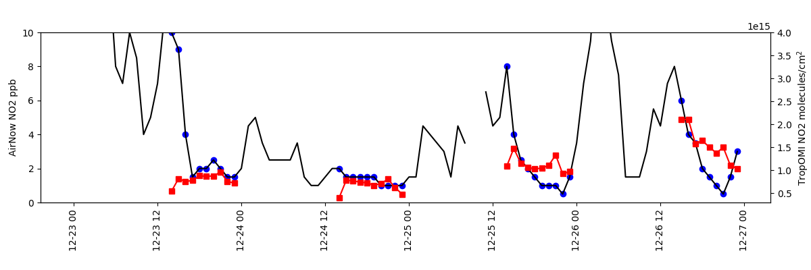

Note
Go to the end to download the full example code
El Paso AirNow vs TEMPO
Timeseries comparison of NO2 from AirNow and TEMPO in El Paso, TX during unvalidated release 2023-12-17 to 2023-12-30.

https://ofmpub.epa.gov/rsig/rsigserver?SERVICE=wcs&VERSION=1.0.0&REQUEST=GetCoverage&FORMAT=ascii&TIME=2023-12-23T00:00:00Z/2023-12-26T23:59:59Z&BBOX=-106.7,31.39,-105.95,32.0&COVERAGE=airnow.no2&COMPRESS=1
Calling RSIG elpaso/airnow.no2_2023-12-23T000000Z_2023-12-26T235959Z.csv.gz
Retrieving ..
https://ofmpub.epa.gov/rsig/rsigserver?SERVICE=wcs&VERSION=1.0.0&REQUEST=GetCoverage&FORMAT=ascii&TIME=2023-12-23T00:00:00Z/2023-12-26T23:59:59Z&BBOX=-106.7,31.39,-105.95,32.0&COVERAGE=tempo.l2.no2.vertical_column_troposphere&COMPRESS=1&MAXIMUM_CLOUD_FRACTION=1.0&MINIMUM_QUALITY=normal&KEY=none&CORNERS=1
Calling RSIG elpaso/tempo.l2.no2.vertical_column_troposphere_2023-12-23T000000Z_2023-12-26T235959Z.csv.gz
Retrieving ...
import matplotlib.pyplot as plt
import pyrsig
import pandas as pd
import os
# Create an RSIG api isntance
# Define a Time and Space Scope during unvalidated release around El Paso TX
rsigapi = pyrsig.RsigApi(
bdate='2023-12-23T00', edate='2023-12-26T23:59:59',
bbox=(-106.70, 31.39, -105.95, 32.00), workdir='elpaso'
)
# For the unvalidated data release, you do not need a key. To expand,
# outside the release, use a key.
# tkey = open(os.path.expandusrer('~/.tempokey'), 'r').read().strip()
tkey = 'none'
rsigapi.tempo_kw['api_key'] = tkey
# Get AirNow NO2 with dates parsed and units removed from column names
andf = rsigapi.to_dataframe(
'airnow.no2', parse_dates=True, unit_keys=False, verbose=9
)
# Get TEMPO NO2
tempodf = rsigapi.to_dataframe(
'tempo.l2.no2.vertical_column_troposphere',
unit_keys=False, parse_dates=True, verbose=9
)
# Create spatial medians for TEMPO and AirNow
tempods = tempodf.groupby(pd.Grouper(key='time', freq='1h')).median(numeric_only=True)[
'no2_vertical_column_troposphere'
]
ands = andf.groupby(['time']).median(numeric_only=True)['no2']
# Subset AirNow to overpass times
oands = ands.loc[ands.index.isin(tempods.dropna().index.floor('1h'))] # just overpass t
# Create axes with shared x
fig, ax = plt.subplots(figsize=(12, 4),
gridspec_kw=dict(bottom=0.25, left=0.05, right=0.95))
ax.tick_params(axis='x', labelrotation=90)
tax = ax.twinx()
# Add AirNow with markers at overpasses
ax.plot(ands.index.values, ands.values, color='k')
ax.scatter(oands.index.values, oands.values, marker='o', color='b')
# Add TEMPO NO2
tax.plot(tempods.index.values, tempods.values, marker='s', color='r')
# Configure axes
ax.set(ylabel='AirNow NO2 ppb', ylim=(0, 10))
tax.set(ylim=(0.3e15, 4e15), ylabel='TropOMI NO2 molecules/cm$^2$')
plt.show()
# Or save out figure
fig.savefig('el_paso.png')
Total running time of the script: ( 1 minutes 30.522 seconds)